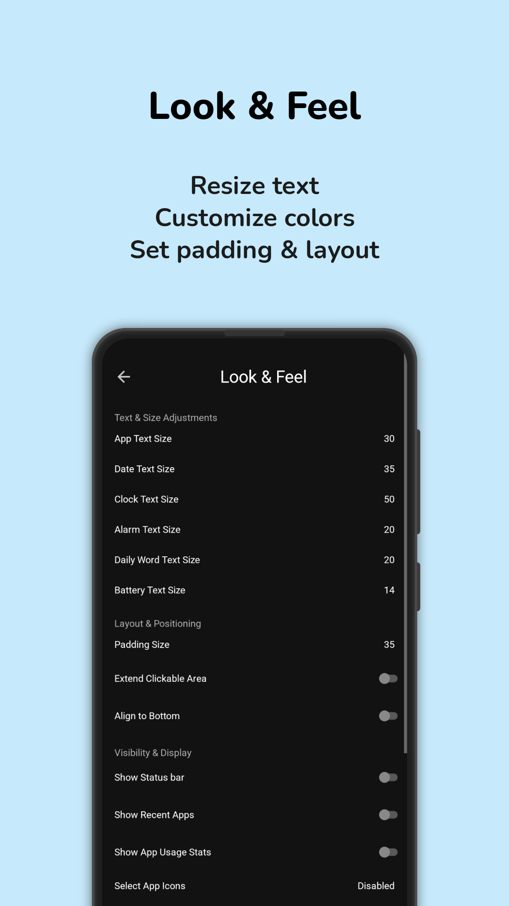

Download MultiLauncher
Ready to transform your Android device? Download MultiLauncher now from the Play Store.
Download NowAbout MultiLauncher
MultiLauncher , developed by DroidWorks Studio, is a revolutionary Android launcher designed to provide users with a fast, flexible, and highly customizable home screen experience. With an emphasis on user experience, simplicity, and performance, MultiLauncher allows you to take full control over how your device looks and functions.
Whether you're looking to personalize your home screen with unique themes, streamline your app list for better organization, or enhance security with biometric features, MultiLauncher offers everything you need. Our goal is to make your Android device smarter, faster, and more efficient.
Key features include advanced gesture controls, app list customization, biometric security, and the ability to track your app usage for better productivity. With a user-friendly interface and optimized performance, MultiLauncher is the perfect solution for those who want a clean, customizable, and seamless experience.
Join the growing community of users who trust MultiLauncher for a smoother, more personalized Android experience!
Why Choose MultiLauncher ?
Customization
MultiLauncher offers an extensive range of customization options. You can personalize everything from themes and icons to layout and font size. Tailor your home screen to reflect your unique style.
Performance
With MultiLauncher , enjoy a fast and smooth experience. It’s optimized for both high-end and budget smartphones, ensuring that you get the best performance even on devices with lower specs.
User-Friendly Interface
The interface of MultiLauncher is simple, intuitive, and easy to navigate. Whether you’re a tech enthusiast or a casual user, you’ll be able to get started quickly without any frustration.
Security and Privacy
MultiLauncher prioritizes your privacy and security. It does not collect unnecessary data, ensuring that your personal information stays private. The app is transparent about permissions and your data is fully in your control.
Lightweight
Unlike other launchers that can slow down your device, MultiLauncher is lightweight. It uses minimal resources, so you can keep your device running smoothly without sacrificing performance or battery life.
Advanced Gestures
MultiLauncher supports a variety of gestures, from taps to swipes, allowing you to trigger actions like launching apps, accessing recent apps, and even locking your device, all with a simple gesture.
App List Customization
MultiLauncher offers full control over your app list. You can rename apps within the list for a more personalized experience and adjust the layout to create a streamlined, user-friendly home screen.
App Usage Insights
Stay informed about your app usage habits with MultiLauncher 's built-in insights. Track and monitor how much time you spend on individual apps directly from your home screen for better awareness and productivity.
Gallery
 |
 |
 |
 |
 |
 |
 |  |